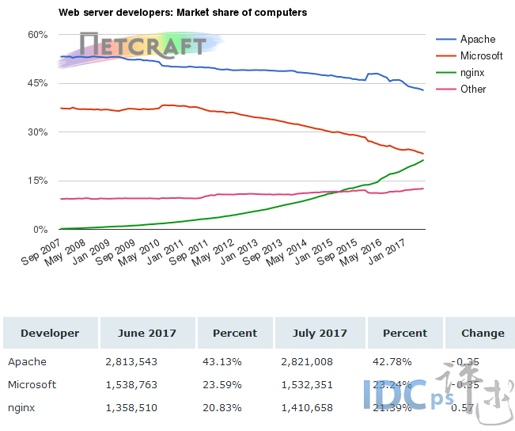
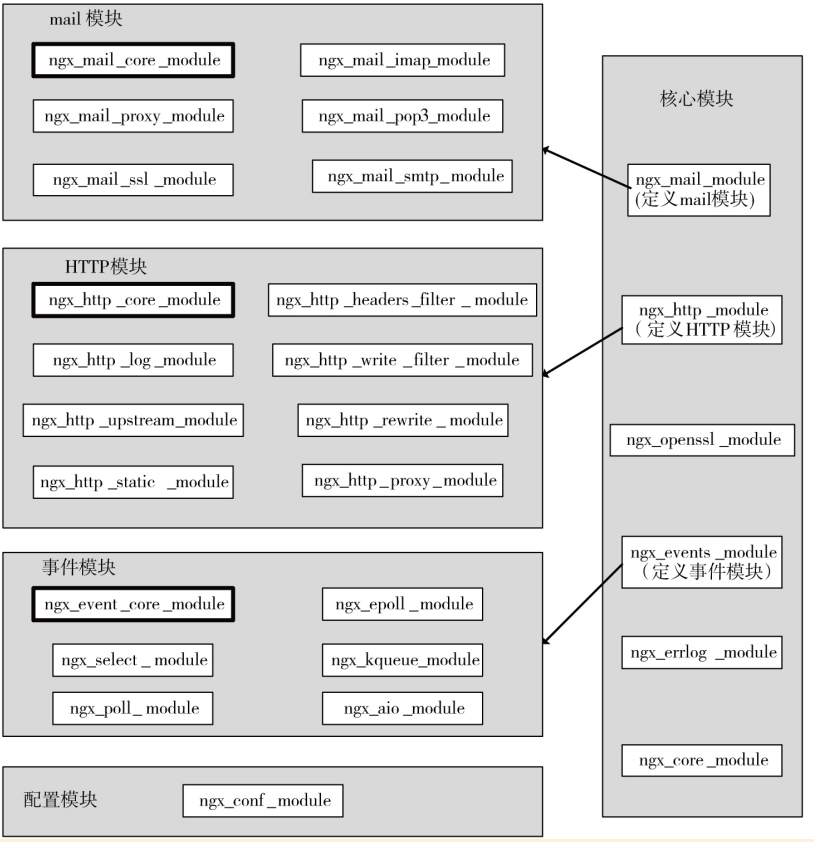

Nginx核心模块与配置实践
1. Nginx 简介与安装
1.1 知识点：
Nginx 简介
Nginx是一个高性能WEB服务器，除它之外Apache、Tomcat、Jetty、IIS，它们都是Web服务器，或者叫做WWW（World Wide Web）服务器，相应地也都具备Web服务器的基本功能。Nginx 相对基它WEB服务有什么优势呢？
- Tomcat、Jetty 面向java语言，先天就是重量级的WEB服务器，其性能与Nginx没有可比性。
- IIS只能在Windows操作系统上运行。Windows作为服务器在稳定性与其他一些性能上都不如类UNIX操作系统，因此，在需要高性能Web服务器的场合下IIS并不占优。
- Apache的发展时期很长，而且是目前毫无争议的世界第一大Web服务器，其有许多优点，如稳定、开源、跨平台等，但它出现的时间太长了，在它兴起的年代，互联网的产业规模远远比不上今天，所以它被设计成了一个重量级的、不支持高并发的Web服务器。在Apache服务器上，如果有数以万计的并发HTTP请求同时访问，就会导致服务器上消耗大量内存，操作系统内核对成百上千的Apache进程做进程间切换也会消耗大量CPU资源，并导致HTTP请求的平均响应速度降低，这些都决定了Apache不可能成为高性能Web服务器，这也促使了Lighttpd和Nginx的出现。 下图可以看出07年到17 年强劲增长势头。

1.2 编译与安装
安装环境准备
linux 内核2.6及以上版本
只有2.6之后才支持epool ，在此之前使用select或pool多路复用的IO模型，无法解决高并发压力的问题。通过命令uname -a 即可查看。
# 查看linux内核
uname -a
GCC编译器
GCC（GNU Compiler Collection）可用来编译C语言程序。Nginx不会直接提供二进制可执行程序,只能下载源码进行编译。
PCRE库
PCRE（Perl Compatible Regular Expressions，Perl兼容正则表达式）是由Philip Hazel开发的函数库，目前为很多软件所使用，该库支持正则表达式。
zlib库
zlib库用于对HTTP包的内容做gzip格式的压缩，如果我们在nginx.conf里配置了gzip on，并指定对于某些类型（content-type）的HTTP响应使用gzip来进行压缩以减少网络传输量。
OpenSSL开发库
如果我们的服务器不只是要支持HTTP，还需要在更安全的SSL协议上传输HTTP，那么就需要拥有OpenSSL了。另外，如果我们想使用MD5、SHA1等散列函数，那么也需要安装它。
上面几个库都是Nginx 基础功能所必需的，为简单起见我们可以通过yum 命令统一安装。
# yum 安装nginx环境
yum -y install make zlib zlib-devel gcc-c++ libtool openssl openssl-devel pcre pcre-devel
源码获取
nginx 下载页：http://nginx.org/en/download.html 。
# 下载nginx 最新稳定版本
wget http://nginx.org/download/nginx-1.14.0.tar.gz
# 解压
tar -zxvf nginx-1.14.0.tar.gz
安装
# 全部采用默认安装
./configure & make & make install
执行完成之后 nginx 运行文件 就会被安装在 /usr/local/nginx 下。
模块更新
# 添加状态查查看模块
./configure --with-http_stub_status_module
# 重新创建主文件
make
# 将新生成的nginx文件覆盖旧文件。
cp objs/nginx /usr/local/nginx/sbin/
# 查看是否更新成功 显示了configure构建参数表示成功
/usr/local/nginx/sbin/nginx -V
# 或者无需拷贝，直接用make install进行覆盖安装，安装期间，原nginx文件夹会被重命名为nginx.olds
make install
控制命令
# 查看命令帮助
./sbin/nginx -?
# 默认方式启动：
./sbin/nginx
# 指定配置文件启动
./sbing/nginx -c /tmp/nginx.conf
# 指定nginx程序目录启动
./sbin/nginx -p /usr/local/nginx/
# 快速停止
./sbin/nginx -s stop
# 优雅停止
./sbin/nginx -s quit
# 热装载配置文件
./sbin/nginx -s reload
# 重新打开日志文件
# 当日志文件需要迁移时，将原日志文件改名或移走，然后创建同名的新日志文件后，需要重新载入
# 否则日志内容仍旧会被存到原来的日志文件中
./sbin/nginx -s reopen
# 设置全局命令，如下表示设置启动用户为root
./sbin/nginx -g "user root;"
# 可以看到nginx的启动用户为root，不指定时为nobody
ps -ef|grep nginx
2. Nginx 架构说明
2.1 Nginx 架构图

架构说明
- nginx启动时，会生 不处理网络请求，主要负责调度工作进程，也就是图示的三项：加载配置、启动工作进程及非停升级。所以，nginx启动以后，查看操作系统的进程列表，我们就能看到至少有两个nginx进程。
- 服务器实际处理网络请求及响应的是工作进程（worker），在类unix系统上，nginx可以配置多个worker，而每个worker进程都可以同时处理数以千计的网络请求。
- 模块化设计。nginx的worker，包括核心和功能性模块，核心模块负责维持一个运行循环（run-loop），执行网络请求处理的不同阶段的模块功能，如网络读写、存储读写、内容传输、外出过滤，以及将请求发往上游服务器等。而其代码的模块化设计，也使得我们可以根据需要对功能模块进行适当的选择和修改，编译成具有特定功能的服务器。
- 事件驱动、异步及非阻塞，可以说是nginx得以获得高并发、高性能的关键因素，同时也得益于对Linux、Solaris及类BSD等操作系统内核中事件通知及I/O性能增强功能的采用，如kqueue、epoll及event ports。
2.2 Nginx 核心模块

3. Nginx 配置与使用
3.1 知识点
- 配置文件语法格式
- 配置第一个静态WEB服务
- 配置案例
- 动静分离实现
- 防盗链
- 多域名站点
- 下载限速
- IP 黑名单
- 基于user-agent分流
- 日志配置
3.2 配置文件的语法格式
先来看一个简单的nginx 配置
worker_processes 1;
events {
worker_connections 1024;
}
http {
# 将mime.types中的内容添加到此处
include mime.types;
default_type application/octet-stream;
sendfile on;
# 长链接的最大超时时间
keepalive_timeout 65;
# 配置一个具体的站点，可以配置多个server
server {
# 监听的端口
listen 80;
# 站点域名
server_name localsss
# 对文件目录进行划分
location / {
# 可以在location中配置，表示此location独享，
# 也可以在server配置，多个location共享，
# location中的配置优先级高于server，
# 注意：结尾需要加分号
root /www/tyrival/;
index index.html index.htm;
}
location /nginx_status {
stub_status on;
access_log off;
}
}
# 同样访问80端口，基于IP访问就进入上面server，基于域名访问就进入下面的server
server {
listener 80;
service_name www.tyrival.com *.droopy.com www.tom.*
}
}
上述配置中的events、http、server、location、upstream等属于配置项块。而worker_processes 、worker_connections、include、listen属于配置项块中的属性。/nginx_status 属于配置块的特定参数。其中server块嵌套于http块，其可以直接继承访问Http块当中的参数。
| 配置块 | 名称开头用大口号包裹其对应属性 |
|---|---|
| 属性 | 基于空格切分属性名与属性值，属性值可能有多个项 都以空格进行切分 如：access_log logs/host.access.log main |
| 参数 | 其配置在 块名称与大括号间，其值如果有多个也是通过空格进行拆 |
注意 如果配置项值中包括语法符号，比如空格符，那么需要使用单引号或双引号括住配置项值，否则Nginx会报语法错误。例如：
log_format main '$remote_addr - $remote_user [$time_local] "$request" '
'$status $body_bytes_sent "$http_referer" '
'"$http_user_agent" "$http_x_forwarded_for"';
3.3 配置第一个静态WEB服务
基础站点演示
创建站点目录
mkdir -p /usr/www/tyrival编写静态文件
配置 nginx.conf
- 配置server
- 配置location
基本配置
监听端口 语法：
listen address默认：listen 80配置块：server主机名称 语法：
server_name name[……]默认：server_name ""配置块：serverserver_name后可以跟多个主机名称，如server_name www.testweb.com、download.testweb.com;。 支持通配符与正则location 语法：
location[=|～|～*|^～|@]/uri/{……}配置块：server=表示把URI作为字符串，以便与参数中的uri做完全匹配。
location = /old/baidu { proxy_pass https://www.baidu.com/; }/基于uri目录匹配~表示正则匹配URI时，是字母大小写敏感的。
location ~ \.png|jpg|gif|css|js|avi|mp4 { root /www/static/; }~*表示正则匹配URI时忽略字母大小写问题。^~表示正则匹配URI时只需要其前半部分与uri参数匹配即可。
匹配优先规则：
精确匹配优先
=正则匹配优先
^~前缀最大匹配优先
配置靠前优化
- root 指定站点根目录 可配置在 server与location中，基于ROOT路径+URL中路径去寻找指定文件。
- alias 指定站点别名 只能配置location 中。基于alias 路径+ URL移除location 前缀后的路径来寻找文件。 示例：
location /V1 {
alias /www/old_site;
index index.html index.htm;
}
# 访问规则如下
URL：http://xxx:xx/V1/a.html
最终寻址：/www/old_site/a.thml
示例
动静分离演示
- 创建静态站点
- 配置 location /static
- 配置 ~* .(gif|png|css|js)$
基于目录动静分离
server {
listen 80;
server_name *.tyrival.com;
root /usr/www/tyrival;
location / {
index tyrival.html;
}
location /static {
alias /usr/www/static;
}
}
基于正则动静分离
location ~* \.(gif|jpg|png|css|js)$ {
root /usr/www/static;
}
防盗链配置演示
# 加入至指定location 即可实现
location / {
index index.html index.htm;
valid_referers none blocked *.tyrival.com;
if ($invalid_referer) {
return 403;
}
}
下载限速
location /download {
limit_rate 1m; # 限制每秒下载速度
limit_rate_after 30m; # 下载超过30m之后限速
}
创建IP黑名单
# 封禁指定IP
deny 192.168.0.1;
allow 192.168.0.1;
# 开放指定IP 段
allow 192.168.0.0/24;
# 封禁所有
deny all;
# 开放所有
allow all;
# 创建黑名单文件
echo 'deny 192.168.0.132;' >> black.ip
# http配置块中引入黑名单文件
include black.ip;
3.4 日志配置：
日志格式
log_format main '$remote_addr - $remote_user [$time_local] "$request" '
'$status $body_bytes_sent "$http_referer" '
'"$http_user_agent" "$http_x_forwarded_for"';
access_log logs/access.log main;
#基于域名打印日志
access_log logs/$host.access.log main;
error日志的设置
语法：error_log /path/file level;
默认：error_log logs/error.log error;
level是日志的输出级别，取值范围是debug、info、notice、warn、error、crit、alert、emerg，
针对指定的客户端输出debug级别的日志
语法：debug_connection[IP|CIDR]
events {
debug_connection 192.168.0.147;
debug_connection 10.224.57.0/200;
}
注意：debug 日志开启 必须在安装时 添加 --with-debug (允许debug)
nginx.conf 配置文件示例
#user nobody; worker_processes 1; #error_log logs/error.log; #error_log logs/error.log notice; error_log logs/error.log debug; #pid logs/nginx.pid; events { debug_connection 192.168.0.147; worker_connections 1024; } http { include mime.types; default_type application/octet-stream; log_format main '$remote_addr - $remote_user [$time_local] "$request" ' '$status $body_bytes_sent "$http_referer" ' '"$http_user_agent" "$http_x_forwarded_for"'; #access_log logs/access.log main; sendfile on; #tcp_nopush on; #keepalive_timeout 0; keepalive_timeout 65; #gzip on; server { listen 80; server_name www.luban.com; root /www/luban/; access_log logs/$host.access.log main; location / { index index.html index.htm; valid_referers none blocked *.luban.com; if ($invalid_referer) { return 403; } } location /old/ { alias /www/old_luban/; index index.html index.htm; } location = /old/baidu { proxy_pass http://www.baidu.com/; } location ~ \.(png|jpg|gif|avi|mp4|css|js)$ { root /www/static/; valid_referers none blocked *.luban.com; if ($invalid_referer) { return 403; } } } server { listen 80; server_name localhost; #charset koi8-r; #access_log logs/host.access.log main; location / { root html; index index.html index.htm; } location = /basic_status { stub_status; } #error_page 404 /404.html; # redirect server error pages to the static page /50x.html # error_page 500 502 503 504 /50x.html; location = /50x.html { root html; } # proxy the PHP scripts to Apache listening on 127.0.0.1:80 # #location ~ \.php$ { # proxy_pass http://127.0.0.1; #} # pass the PHP scripts to FastCGI server listening on 127.0.0.1:9000 # #location ~ \.php$ { # root html; # fastcgi_pass 127.0.0.1:9000; # fastcgi_index index.php; # fastcgi_param SCRIPT_FILENAME /scripts$fastcgi_script_name; # include fastcgi_params; #} # deny access to .htaccess files, if Apache's document root # concurs with nginx's one # #location ~ /\.ht { # deny all; #} } # another virtual host using mix of IP-, name-, and port-based configuration # #server { # listen 8000; # listen somename:8080; # server_name somename alias another.alias; # location / { # root html; # index index.html index.htm; # } #} # HTTPS server # #server { # listen 443 ssl; # server_name localhost; # ssl_certificate cert.pem; # ssl_certificate_key cert.key; # ssl_session_cache shared:SSL:1m; # ssl_session_timeout 5m; # ssl_ciphers HIGH:!aNULL:!MD5; # ssl_prefer_server_ciphers on; # location / { # root html; # index index.html index.htm; # } #} }